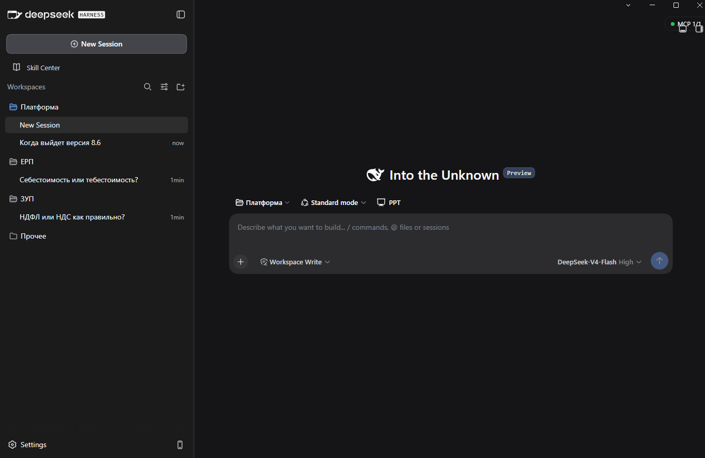
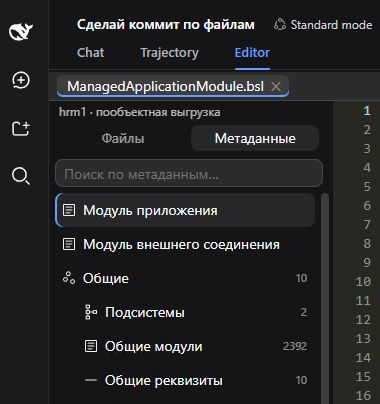
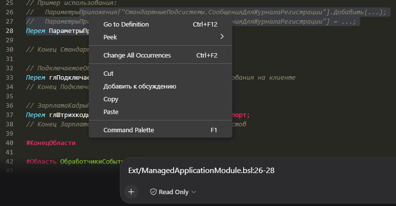
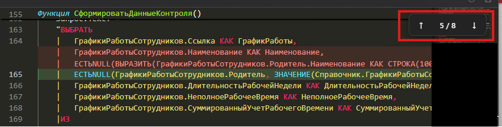
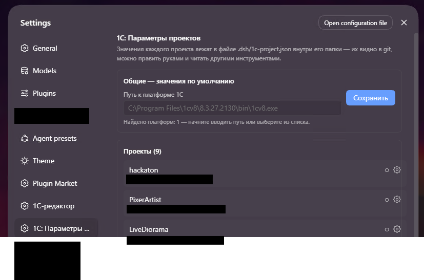

Агент знает вашу платформу
Офлайн-справка по API установленной 1С и проверка BSL-кода: методы, аргументы и значения перечислений. Укажите путь к платформе в параметрах проектов — сервер запустится сам.
Разработка на 1С, разбор рабочих вопросов, схемы и другие задачи — в одном приложении. Создавайте рабочие области и переключайтесь между проектами, чтобы продолжать нужную работу.
Windows 10/11 x64 · сборка 0.9.0-2 на GitHub

НОВОЕ В СБОРКЕ / 0.9.0-2
Офлайн-справка по API установленной 1С и проверка BSL-кода: методы, аргументы и значения перечислений. Укажите путь к платформе в параметрах проектов — сервер запустится сам.
Сервер документации v8std теперь виден в MCP-менеджере. Включайте и выключайте его, просматривайте доступные инструменты прямо в панели.
Устранён сбой modsearch при первом запросе. Обновление теперь проверяет содержимое архивов и устанавливает исправленные плагины, даже если номер плагина не изменился.
Обновление без переустановки. Запустите новый .exe поверх предыдущей версии: диалоги, настройки, ключи и рабочие области сохранятся. Новые версии скачиваются вручную.
01 / РАБОЧИЕ ОБЛАСТИ И ПРОЕКТЫ
Один агент — для разных видов работы.
Каждому проекту — своя рабочая область.
Утром — доработка модуля 1С, затем — вопрос по ЕРП, схема процесса или подготовка документа. Выберите нужный проект в боковой панели и продолжайте работу в его сессиях.
Дорабатывайте модули и разбирайтесь в возможностях платформы 1С.
Обсуждайте процессы, учёт и задачи по конкретной конфигурации.
Ведите отдельные обсуждения по зарплате и кадровым процессам.
Готовьте тексты, стройте схемы и исследуйте другие темы с ИИ.
Рабочие области объединяют проекты.
Сессии внутри них помогают разделять задачи.
02 / ВСЁ В ОДНОЙ СБОРКЕ
Не собирайте инструменты по частям.
Мы подготовили среду для работы с 1С.
Десктопный интерфейс и пошаговый помощник установки. Начните с одного .exe-файла.
DESKTOP / WINDOWSВключённые правила и скиллы помогают агенту работать с задачами разработки на 1С.
ПРАВИЛА + СКИЛЛЫАвтоустановка необходимых MCP для 1С и других задач. Можно добавить свои MCP-серверы.
MCP / ИНТЕГРАЦИИМодели могут искать информацию в интернете, чтобы находить материалы для ваших задач.
ПОИСК В ИНТЕРНЕТЕ03 / НАШИ ПЛАГИНЫ
Редактируйте BSL прямо внутри агента. Перемещайтесь по дереву метаданных и сразу видите, что изменилось.



Данные подключения и авторизации для каждой информационной базы — в параметрах проекта, доступных инструментам агента.

04 / ОТ КОДА К КАРТИНЕ ЦЕЛИКОМ
Попросите агента построить блок-схему: отдельную HTML-страницу с Archify или Mermaid-диаграмму для документации.
Знакомьтесь, ArchifyОбъясняйте. Обсуждайте. Документируйте.
05 / НАЧАТЬ ПРОСТО
Откройте релиз на GitHub и скачайте .exe-установщик в разделе Assets.
Следуйте помощнику и подготовленной пошаговой инструкции.
В инструкции — выбор российских API-провайдеров и оплата в рублях.
Доступ к ИИ-моделям оплачивается
у выбранного API-провайдера.
Мы активно работаем над продуктом. Впереди — новые релизы, плагины и возможности.